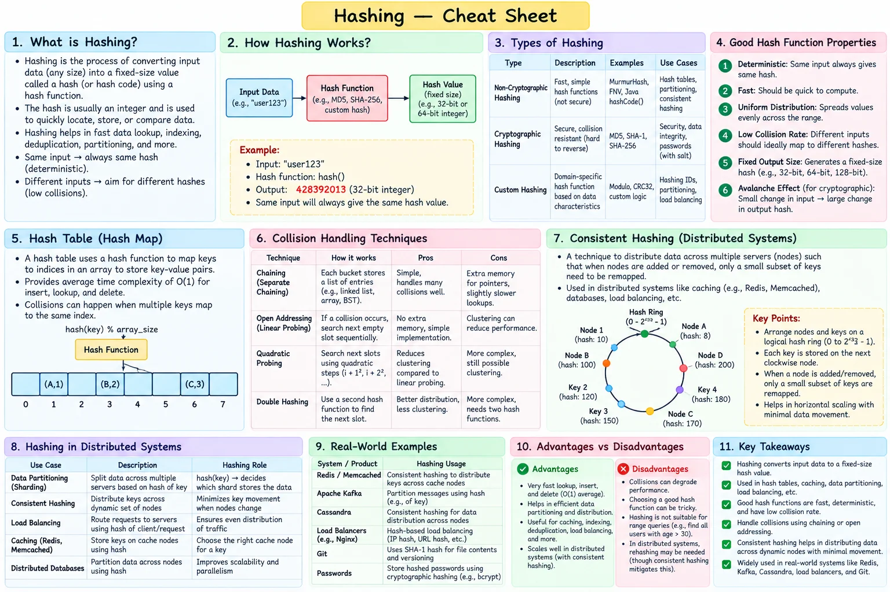

Topic · System Design Fundamentals
Hashing
Deterministically map a large input space to a smaller one - for buckets, shards, nodes, dedup, and checksums.
Cheat sheet


Quick Revision
- A good routing hash is deterministic, fast, uniform, and low-collision.
- Collisions are always possible: handle with chaining or open addressing.
- Hashing is not encryption.
- Routing: fast non-cryptographic hashes. Passwords: Argon2id, scrypt, bcrypt, PBKDF2 - never raw MD5/SHA-1/SHA-256.
hash(key) % Nremaps most keys when N changes → see consistent hashing.
Design checklist
- Requirements - speed, distribution, adversarial resistance, collision tolerance.
- Estimation - bucket count, load factor, expected key skew.
- High-level design -
hash(key) → bucket / shard / node. - Deep dives - collision handling, partition-key choice, hot keys, modulo rehashing, dedup, checksums, security.
Failure modes
- One hot key overloads one node - replicate or split/salt the key, add an L1 cache, adaptive routing.
Interview practice
Answer aloud, then reveal.
Frequent: design a URL shortener - how do you generate the short key?
Unique ID + Base62, or hash + collision resolution. Cache hot redirects, stateless servers behind a load balancer, shard by short key; 301 vs 302 depends on server load vs analytics needs.